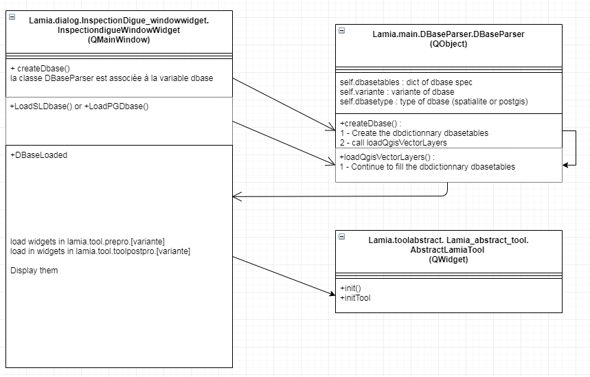

Developpement¶
Fonctionnement général¶
Le code repose principalement sur trois classes.
La classe « Lamia.dialog.InspectionDigue_windowwidget.InspectiondigueWindowWidget », qui est chargée au démarrage. Il s’agit du QDockWidget apparaissant au click sur l’icone Lamia dans l’interface QGis.
La classe « Lamia.main.DBaseParser.DBaseParser ». Il s’agit d’un QObject chargé de l’ensemble des intéractions avec la base de données.
La classe « Lamia.toolabstract. Lamia_abstract_tool. AbstractLamiaTool » qui est un widget abstrait dont héritent tous les widgets apparaissant sur l’écran « propriétés ».
L’activité lors de l’ouverture de la base de données est schématisée ci-dessous :
- 
InspectiondigueWindowWidget est créé lors de l’ouverture de Lamia. Au chargement/création de la base de données, la classe DBaseParser est créée en variable d’InspectiondigueWindowWidget et cette classe se charge de la création et de la lecture de la base de données.
{kind=link}
Ensuite, * InspectiondigueWindowWidget.DBaseLoaded* charge l’ensemble des widgets (tous héritant de AbstractLamiaTool) apparaissant dans l’écran en bas à droite du InspectiondigueWindowWidget .
Ainsi, le code est structuré de la façon suivante :
Dossier |
Contenu |
+—dialog |
Contient les fichiers sources des interfaces graphiques des boites de dialogues de LAMIA ainsi que les codes python pour les gérer. Il contient notamment InspectiondigueWindowWidget . |
+—main |
Contient le main de LAMIA qui importe le DBaseParser et le DBaseParser qui initialise l’environnement LAMIA. |
+—toolabstract |
Contient Lamia_abstract_tool.py qui est la classe abstraite dont héritent tous les widgets présents en bas à droite de InspectiondigueWindowWidget . |
Les éléments propres à la création et à la manipulation de la base de données sont ici :
Dossier |
Contenu |
+—DBASE |
Dossier contenant tous les éléments nécessaires à la création des bases de données |
+—BPU |
Dossier contenant les bordereaux de prix permettant le chiffrage automatique des travaux |
+—create |
Dossier contenant tous les fichiers excel embarquant la description des tables ainsi que les nomenclatures |
+—sqlite_base |
Dossier contenant la base SQLITE utilisée pour amorcée la création des bases de données |
+—style |
Contient les feuilles de styles utilisées pour l’affichage de l’interface LAMIA |
—utils |
Contient des ressources d’affichage |
Tous les widgets apparaissant en bas à droite d’ InspectiondigueWindowWidget et héritant de AbstractLamiaTool sont stockés ici :
Dossier |
Contenu |
+—toolpostpro |
Outils de post-production (synthèses, exports, rapports, …) |
+—Base2 |
Outils génériques d’import, d’export, de synthèse, de gestion des paths, de génération des rapports, d’étude de coûts, … |
+—[Type métier] |
Outils de post-traitement adaptés au métier. |
—toolprepro |
Interfaces graphiques et classes pythons permettant de manipuler la base de données |
+—Base2 |
Outils génériques |
+—[Type métier] |
Outils d’alimentation de la base de données adaptés au métier. |
En plus de ces packages, les packages suivants sont également utilisés.
Dossier |
Contenu |
+—config |
Stock les données récemment utilisées à conserver en mémoire comme l’adresse des dernières bases utilisées |
+—gps |
Contient les outils de connexion et d’exploitation des GPS |
+—html |
Contient des outils de mise en page (js, css, images, polices, …) |
+—icons |
Contient les icones utilisés dans LAMIA |
+—lamiautils |
Vide |
+—libs |
Continent certaines librairies embarquées directement dans LAMIA, souvent parce qu’elles ont été modifiées |
+—cloudant |
Librairie de connexion à une base NoSQL (lien avec SIRS Digues) |
+—cloudant_2_10 |
Librairie de connexion à une base NoSQL (lien avec SIRS Digues) |
+—pyqtgraph |
Librairie de génération de graphiques |
—xlrd |
Librairie de lecture de fichier Excel utilisée pour la création des bases de données |
+—maptool |
Contient les éléments d’interaction avec la cartographie de Qgis |
+—toolgeneral |
Contient des modules complémentaires pour LAMIA |
+—LAMIA_to_SIRS |
Permet de faire la passerelle depuis LAMIA vers SIRS Digues |
+—LAMIA_to_SIRS_VCouch1_7 |
Permet de faire la passerelle depuis LAMIA vers SIRS Digues V1.7 |
+—SIRS_to_LAMIA |
Permet de faire la passerelle depuis SIRS Digues vers LAMIA |
—SIRS_to_LAMIA_VCouch1_7 |
Permet de faire la passerelle depuis SIRS Digues vers LAMIA |
Cas pratique : création d’un nouveau module de post-traitement¶
Nous voulons créer un module de post-traitement pour le métier « éclairage ».
Dans ce cas, il faut créer un fichier test_module.py dans le répertoire lamia/toolpostpro/Base2_eclairage.
Ensuite, il convient de créer un widget avec QtDesigner et de l’enregistrer sous “test_module.ui” dans le même répertoire.
Ce fichier aura la structure minimale suivante :
import os
from ...toolabstract.Lamia_abstract_tool import AbstractLamiaTool
from qgis.PyQt import uic
from qgis.PyQt.QtWidgets import (QWidget)
class CostTool(AbstractLamiaTool):
TOOLNAME = 'test_module'
def __init__(self, dbase, dialog=None, linkedtreewidget=None, gpsutil=None,parentwidget=None, parent=None):
super(CostTool, self).__init__(dbase, dialog, linkedtreewidget, gpsutil,parentwidget, parent=parent)
def initTool(self):
# ****************************************************************************************
# Main spec
self.CAT = 'Synthese'
self.NAME = 'Couts'
self.visualmode = [4]
self.groupBox_elements.setParent(None)
self.frame_editing.setParent(None)
def initFieldUI(self):
if self.userwdgfield is None:
self.userwdgfield = UserUI()
class UserUI(QWidget):
def __init__(self, parent=None):
super(UserUI, self).__init__(parent=parent)
# self.setupUi(self)
uipath = os.path.join(os.path.dirname(__file__), 'test_module.ui')
uic.loadUi(uipath, self)